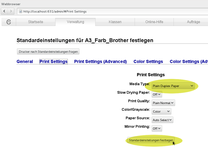

Brother
Dieser Artikel wurde für die folgenden Ubuntu-Versionen getestet:
Ubuntu 16.04 Xenial Xerus
Ubuntu 14.04 Trusty Tahr
Zum Verständnis dieses Artikels sind folgende Seiten hilfreich:
Brother bietet ein Skript (Driver Install Tool) an, das die Installationsschritte durchführt. Diese Anleitung erklärt beispielhaft das Vorgehen für das Modell DCP-7065DN. Im Folgenden ist der Name entsprechend der Modellbezeichnung des eigenen Druckers zu ersetzen. Die dabei unterstützten Bezeichnungen sind auf der Download-Seite des Driver-Install-Tools unter "Kompatible Modelle" aufgelistet.
Auf der englischsprachigen Download-Seite  Brothers wählt man das jeweilige Modell, als "OS Family" "Linux" und als "OS Version" "Linux (deb)" aus. Unter den angebotenen Downloads lädt man das "Driver Install Tool" (linux-brprinter-installer).
Brothers wählt man das jeweilige Modell, als "OS Family" "Linux" und als "OS Version" "Linux (deb)" aus. Unter den angebotenen Downloads lädt man das "Driver Install Tool" (linux-brprinter-installer).
Hinweis:
Das Shell-Skript enthält eine falsch geschriebene Variable $BROTHER_INSRALLER_FAKE_PKG. Dies wirkt sich aber nicht aus, da an jeder Stelle so geschrieben, muss daher auch nicht korrigiert werden.
Nach dem Wechsel ins Downloads-Verzeichnis entpackt man das Archiv:
cd ~/Downloads/ gunzip linux-brprinter-installer-*.gz
Mit sudo-Rechten führt man das Skript mit dem Modellnamen als Parameter aus:
sudo bash linux-brprinter-installer-* DCP-7065DN # Modell des Druckers durch das eigene ersetzen
Die darauf folgenden Abfragen zur Lizenz müssen mit einem "y" bestätigt werden, um mit der Installation fortfahren zu können. Die Frage
Will you specify the Device URI? [Y/n]
ist mit einem "n" zu beantworten, falls der Drucker per USB angeschlossen ist. Damit wird die nachfolgende Frage nach dem Anschluss übersprungen.
Bei einem Netzwerkdrucker muss "y" gedrückt werden. Daraufhin wird eine Liste mit verfügbaren "Druckeranschlüssen" präsentiert. Steht das zu installierende Gerät in der Liste, wählt man den korrekten Anschluss, im Beispiel DCP-7065 demnach folgende Option:
14 (A): Auto. (dnssd://Brother%20DCP-7065DN._pdl-datastream._tcp.local/)
Steht das zu installierende Gerät nicht in der Liste, weil man das Gerät an einem USB-Anschluss eines WLAN-Routers nutzen möchte, ist im Handbuch des Routers nach der zu nutzenden Netzwerkeinstellung zu sehen.
Je nach individueller Netzwerktopologie erscheinen mehrere Drucker zur Auswahl, oder man wählt den Befehl "Specify IP-Address" aus.
Am Beispiel einer AVM Fritzbox nutzt man folgende IP-Adresse:
192.168.178.1
Diese IP-Adresse ist die von AVM ab Werk voreingestellte und bezieht sich natürlich auf die IP-Adresse des Routers, an der der Drucker auch physikalisch angeschlossen ist. Siehe auch hier.
Jetzt kann man eine Testseite drucken. Der Drucker sollte nunmehr fertig installiert sein.
Falls es sich um ein Multifunktionsgerät mit Scanner handelt, folgt nun wieder eine Lizenzabfrage (der im Beispiel genutzte DCP-7065DN ist ein Multifunktionsdrucker). An dieser Stelle benötigt man die IP-Adresse des Druckers. Es empfiehlt sich daher, dem Drucker im Netzwerk eine feste IP-Adresse zugeteilt zu haben. Nach dem Eingeben ist die Installation abgeschlossen, sowohl Drucker als auch Scanner sollten jetzt funktionstüchtig sein.
Einrichtung¶
Je nach Desktop-Umgebung geht es nun unterschiedlich weiter. Hinweise zum "Legacy-Treiber" finden sich hier.
Unity¶
Nach dem Anschließen und Einschalten des Druckers muss man das Gerät mit "Systemeinstellungen > Drucker > Hinzufügen" konfigurieren.
Handelt es sich um den ersten Drucker, der installiert wird, kann es sein, dass eine Einrichtung wie in "Sonstige Desktop-Umgebungen" weiter unten beschrieben nicht funktioniert. Nach der Installation über die Systemeinstellungen lässt sich der Drucker aber wie gewohnt über CUPS verwalten.
GNOME¶
Nach dem Anschließen und Einschalten des Druckers wird er automatisch eingerichtet. Siehe GNOME Druckerkonfiguration
Man klickt auf das Druckermenü und wählt sein Brother-Gerät aus. Es öffnet sich ein folgendes Menü.
Sieht der Eintrag wie folgt usb:/dev/usb/lp0 aus, kann nicht gedruckt werden. Man entfernt kurz das Datenkabel und steckt es wieder an. Alternativ kann das Gerät aus- und eingeschaltet werden. Nun wird von CUPS die Geräte-Adresse auf usb://Brother/GERÄTENAME geändert.
Sonstige Desktop-Umgebungen¶
Nach dem Anschließen und Einschalten des Druckers wird die CUPS-Weboberfläche in einem beliebigen Browser aufgerufen:
http://localhost:631
Jetzt führt man folgende Schritte durch:
"Drucker"
Beim neuen Drucker auf "Drucker ändern"
"Fortsetzen"
In der Liste sollte der Drucker auftauchen; diesen auswählen und Fortsetzen
"Fortsetzen"
"Drucker ändern"
Hinweis:
Man sollte sicherstellen, dass das Papierformat für den Drucker auf A4 statt auf das englisch-amerikanische Format Letter gesetzt ist.
Dazu öffnet man unter "Systemeinstellungen > Drucker" mit einem Rechtsklick die Eigenschaften des Druckers.
Unter "Druckeroptionen > Allgemein > Media Size:" ist A4 auszuwählen.
(W)LAN Drucker einrichten¶
Um einen Wireless-LAN-fähigen Brother-Drucker wie z.B. den DCP-585CW nutzen zu können, muss die LAN-Konfiguration in der ursprünglichen Werkseinstellung sein, da LAN und WLAN nicht parallel genutzt werden können. Wie unter GNOME bzw. Unity ein netzwerkfähiges Brother-Gerät korrekt eingerichtet wird, ist im Artikel GNOME Druckerkonfiguration beschrieben.
Hinweis:
Zu beachten ist die Wahl des korrekten Netzwerkprotokolls, meist ist die Einstellung AppSocket/HP JetDirect korrekt. Siehe Bild
| Richtig : AppSocket/HP JetDirect |
Falls der Drucker nicht erreichbar oder ständig beschäftigt sein sollte, kontrolliert man, ob der Drucker generell über das (W)LAN erreichbar ist. Der WLAN-Router könnte evtl. so konfiguriert sein, dass er Verbindungen zwischen den Teilnehmern blockiert, z.B. muss bei Fritz!Boxen die Option "Die angezeigten WLAN-Geräte dürfen untereinander kommunizieren" aktiv sein. Zum Testen eignet sich ein Terminal und der Befehl [3]:
ping IP_ADRESSE_DES_DRUCKERS
Alternativ kann man versuchen, sich über telnet auf den Drucker einzuloggen (bei den DCP-Modellen ist per Standard kein Passwort gesetzt).
Problembehebung¶
Druck startet nicht¶
Trotz der Installation der benötigten Treiberpakete kann nicht gedruckt werden. Ein möglicher Grund kann sein, dass ein Treiber verwendet wird, der für das verwendete Gerät nicht geeignet ist. Um dieses zu überprüfen, öffnet man "System -> Systemverwaltung -> Drucken" und wechselt zum Brother-Gerät. Unter "Marke und Modell" kann nun der Treiber überprüft oder gewechselt werden.
Falls der korrekte Treiber nicht ausgewählt werden kann, überprüft man, ob eine passende ppd-Datei mit dem Namen Gerätename.ppd im Verzeichnis /usr/share/cups/model bzw. /usr/share/ppd existiert. Nun öffnet man "System -> Systemverwaltung -> Drucken" und wechselt zum Brother-Gerät. Hier wählt man unter "Marke und Modell" auf "Änderung" und "ppd-Datei erstellen". Jetzt wählt man die korrekte ppd-Datei zum Gerät aus. Nun sollte gedruckt werden können.
| Falscher Treiber |
| Korrekter Treiber |
| Treiberpfad auswählen |
| Treiber-Einstellung übernehmen |
Wenn der Drucker über Netzwerk angeschlossen ist, kann es vorkommen, dass Druckaufträge in der Warteschlange stecken bleiben. Oft hilft dann, das Protokoll über das der Drucker angesprochen wird, auf "AppSocket/HP JetDirect" zu wechseln.
Netzwerkdrucker wird nicht gefunden¶
Das System kann Avahi nutzen, um automatisch Netzwerkgeräte und die von ihnen angebotenen Services auffinden zu können. Ist der Drucker über das Netzwerk erreichbar, wird aber vom System nicht automatisch gefunden und installiert, muss meist einfach das Paket avahi-daemon installiert und evtl. das System danach neugestartet werden.
Druck unvollständig¶
Es kann vorkommen, dass der Druckauftrag erfolgreich abgeschickt wird, allerdings das 2. oder 3. Blatt geschwärzt und alle restlichen Blätter aus dem Magazin unbedruckt durch den Drucker gezogen werden. Dies kommt vorrangig bei großen Dokumenten oder Dateien vor. Ein Grund dafür könnte sein, dass man das Tool "brscan-skey" installiert hat. Siehe Brother/Scanner. Das Scan-Tool verursacht ein Datenübertragungsproblem zwischen Gerät und Computer, da es permanent mit diesem kommuniziert. Mit dem Befehl
brscan-skey -t
kann das Tool gestoppt werden, und der Ausdruck sollte ohne Probleme funktionieren.
Druckbild verschoben¶
Wegen einer falschen Papiereinstellung bei einigen Treibern wird das amerikanische Letter-Format anstelle des DIN-A4-Formats benutzt. Um dieses zu korrigieren, öffnet man mit einem Editor [5] mit Root-Rechten die Datei /usr/local/Brother/inf/br(model name)rc. Falls die vorgenannte Datei fehlt, ist /usr/Brother/Printer/modelname/inf/br(modelname)rc zu öffnen. In der Datei ist der Eintrag
PaperType=Letter
auf
PaperType=A4
zu ändern. Nach dem Speichern der Datei ist der CUPS-Druckdienst neu zu starten mit
sudo service cups restart
oder in älteren Ubuntu Versionen auch
sudo /etc/init.d/cups restart
Am besten verifiziert man nun die Papiereinstellung auf der CUPS-Weboberfläche via http://localhost:631/printers. Hier wählt man unter "Drucker -> Administration -> Standardeinstellungen festlegen" unter dem Eintrag "Media Size" nun "DinA4". Über "Standardeinstellungen festlegen" wird die geänderte Konfiguration gespeichert.
Sollte das Druckbild trotz richtiger Papierformateinstellung verschoben sein, kann das Problem bei einigen Modellen (z.B. beim DCP-7055 und DCP-7065DN unter Ubuntu 14.04) wie folgt gelöst werden: Man öffnet mit einem Editor [5] mit root-Rechten die Datei /usr/local/Brother/Printer/(modelname)/lpd/filter(modelname) und ändert den Eintrag
PCL=1
auf
PCL=0
Nach dem Speichern der Datei ist wie oben beschrieben der CUPS-Druckdienst neu zu starten. Sicherheitshalber sollte man auch in den ppd-Dateien, z.B. für DCP-7055 DCP7055.ppd (sowohl im Original /usr/share/cups/model/(Modellname).ppd und als auch /etc/cups/ppd/(Modellname).ppd für den bereits installierten Drucker), die ImageableArea für die verwendendete Papiertypen auf den vollen Bereich setzen, wie er in PaperDimension angegeben ist. Also z.B. für A4:
ImageableArea A4/A4: "18 12 577 830" ... PaperDimension A4/A4: "595 842"
auf
ImageableArea A4/A4: "0 0 595 842"
Hintergrund: Der Brother-Treiber für z.B. die obigen Drucker besteht aus mehreren Schichten: Einer Zwischenschicht ("cupswrapper"), die durch einen Filter CUPS auf den älteren LPD-Treiber zugreifen lässt, der nach optionalen Bearbeitungsschritten mit Ghostscript eine Grafik aus Rohdaten produziert, die dann durch das Programm rawtobr3 in einen PJL-Job und PCL-Befehle mit einer Brother-spezifischen Komprimierung verwandelt werden. Das letzte Programm erwartet eine vollständige Seite und schneidet dann vorgegebene Ränder ab. Wenn in den vorigen Schichten schon Ränder abgeschnitten oder ausgeblendet werden (was z.B. durch PCL=1 passiert), wird das Gesamtergebnis kleiner und erscheint dann verschoben, da die Grafik immer links unten auf der Seite platziert wird.
Kein Duplexdruck¶
Manche Tintenstrahldrucker bieten doppelseitigen Druck nicht an, solange normales Papier eingestellt ist. Damit wird verhindert, dass Tinte, die noch nicht getrocknet ist, verschmiert, während das Papier gewendet wird. Hier sieht man das Problem:
|  | |
| Korrekte Einstellung | Falsche Papierart |
Die einfachste Lösung besteht darin, "Plain Duplex Paper", also schnelltrocknendes Papier als generelle Voreinstellung festzulegen. Dann wird Duplexdruck prinzipiell angeboten. Diese generellen Einstellungen kann man z.B. im Web-Frontend von Cups vornehmen: In einem Browser
http://localhost:631 aufrufen, den Reiter "Drucker" wählen, den betreffenden Drucker anklicken, unter "Administration" klickt man nun auf "Standardeinstellungen festlegen". Rechts neben "General" findet man "Print Settings" (oder ähnlich). Nun kann man als Media Type "Plain Duplex Paper" einstellen. Nicht vergessen, mit  -Klick auf "Standard festlegen" abzuschließen. Diese Einstellungen helfen:
-Klick auf "Standard festlegen" abzuschließen. Diese Einstellungen helfen:
Je nach Druckdialog ist nun der doppelseitige Druck trotz allem auf den ersten Blick nicht anwählbar. Die Option Duplexdruck findet sich aber nochmals unter "Erweitert -> Two-Sided" und ist dort anwählbar. Dieses kann man z.B. auf "Long-Edge Binding" stellen, das entspricht normalem Duplex-Druck.
Sonderfunktionen nutzen¶
Im Gegensatz zum Windows-Treiber liefert Brother für Linux keine zusätzlichen Tools zur Tintenstandkontrolle, Druckkopfreinigung oder Ausrichtung mit. Diese Funktionen können aber direkt über das Gerät aufgerufen werden.


- Erstellt mit Inyoka
-
 2004 – 2017 ubuntuusers.de • Einige Rechte vorbehalten
2004 – 2017 ubuntuusers.de • Einige Rechte vorbehalten
Lizenz • Kontakt • Datenschutz • Impressum • Serverstatus -
Serverhousing gespendet von